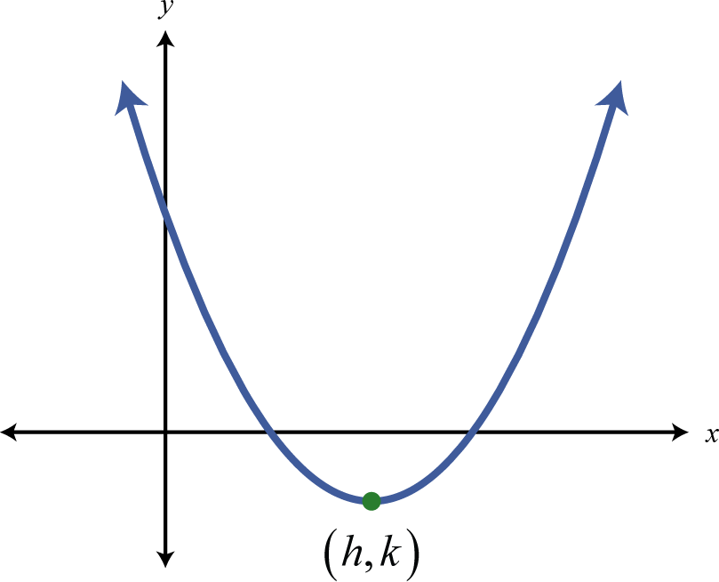
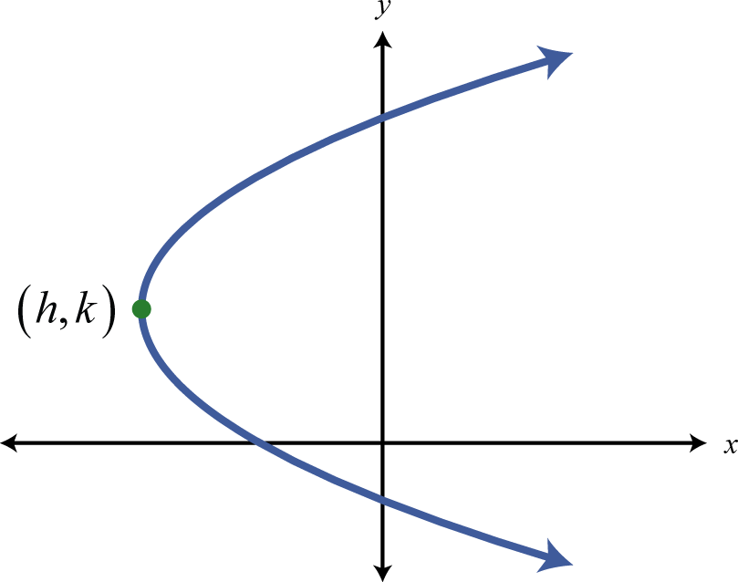
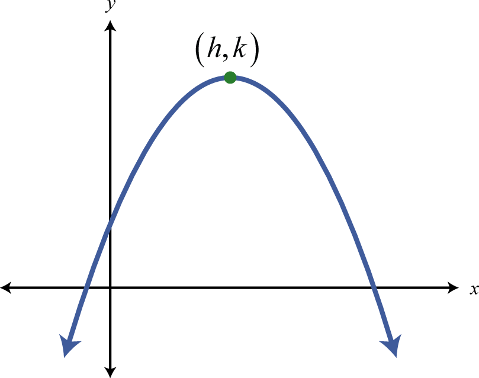
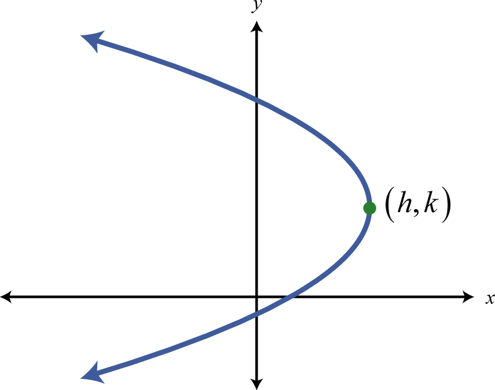
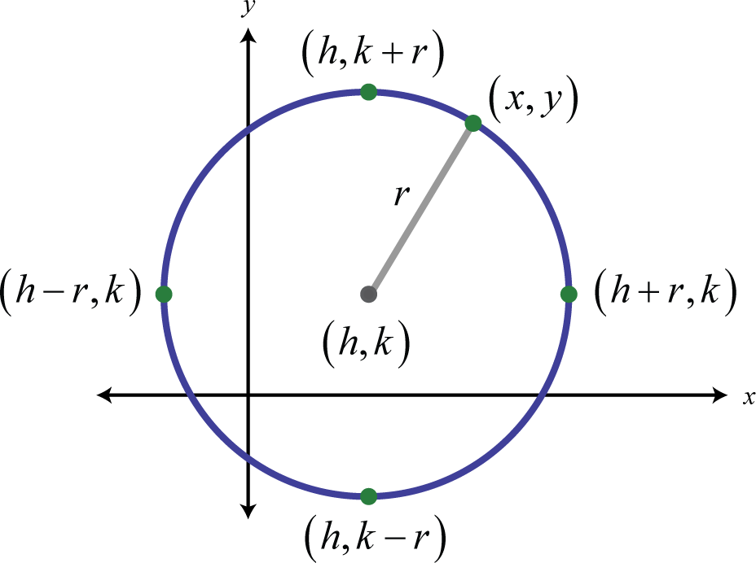
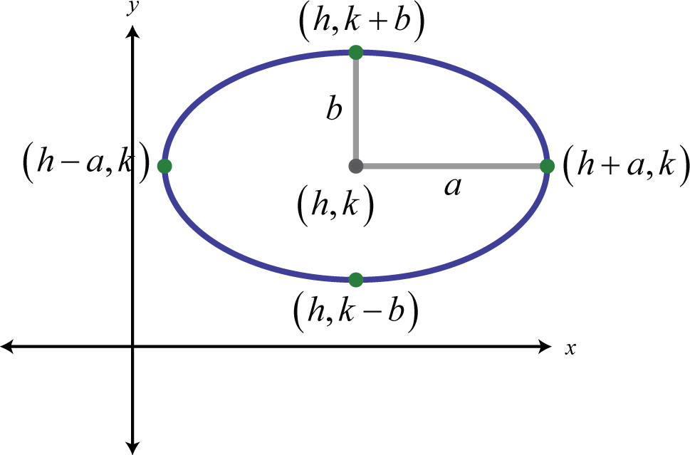
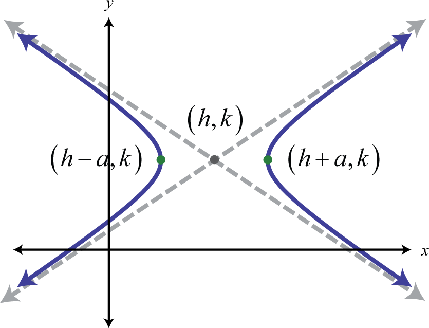
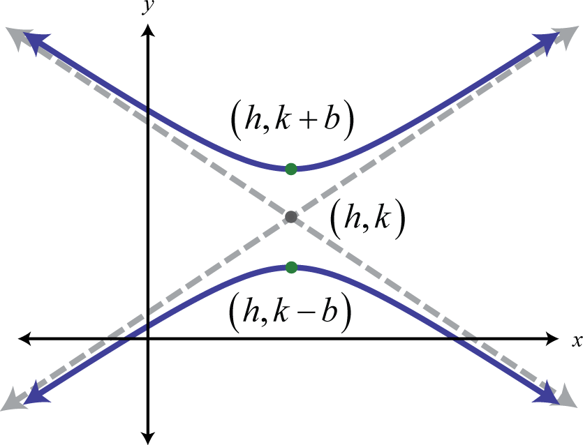

A hyperbolaThe set of points in a plane whose distances from two fixed points, called foci, has an absolute difference that is equal to a positive constant. is the set of points in a plane whose distances from two fixed points, called foci, has an absolute difference that is equal to a positive constant. In other words, if points and are the foci and is some given positive constant then is a point on the hyperbola if as pictured below:
In addition, a hyperbola is formed by the intersection of a cone with an oblique plane that intersects the base. It consists of two separate curves, called branchesThe two separate curves of a hyperbola.. Points on the separate branches of the graph where the distance is at a minimum are called vertices.Points on the separate branches of a hyperbola where the distance is a minimum. The midpoint between a hyperbola’s vertices is its center. Unlike a parabola, a hyperbola is asymptotic to certain lines drawn through the center. In this section, we will focus on graphing hyperbolas that open left and right or upward and downward.
The asymptotes are drawn dashed as they are not part of the graph; they simply indicate the end behavior of the graph. The equation of a hyperbola opening left and right in standard formThe equation of a hyperbola written in the form The center is , a defines the transverse axis, and b defines the conjugate axis. follows:
Here the center is and the vertices are The equation of a hyperbola opening upward and downward in standard formThe equation of a hyperbola written in the form The center is , b defines the transverse axis, and a defines the conjugate axis. follows:
Here the center is and the vertices are
The asymptotes are essential for determining the shape of any hyperbola. Given standard form, the asymptotes are lines passing through the center with slope To easily sketch the asymptotes we make use of two special line segments through the center using a and b. Given any hyperbola, the transverse axisThe line segment formed by the vertices of a hyperbola. is the line segment formed by its vertices. The conjugate axisA line segment through the center of a hyperbola that is perpendicular to the transverse axis. is the line segment through the center perpendicular to the transverse axis as pictured below:
The rectangle defined by the transverse and conjugate axes is called the fundamental rectangleThe rectangle formed using the endpoints of a hyperbolas, transverse and conjugate axes.. The lines through the corners of this rectangle have slopes These lines are the asymptotes that define the shape of the hyperbola. Therefore, given standard form, many of the properties of a hyperbola are apparent.
Equation |
Center |
a |
b |
Opens |
|---|---|---|---|---|
Left and right |
||||
Upward and downward |
||||
Upward and downward |
||||
Left and right |
The graph of a hyperbola is completely determined by its center, vertices, and asymptotes.
Graph:
Solution:
In this case, the expression involving x has a positive leading coefficient; therefore, the hyperbola opens left and right. Here and From the center , mark points 3 units left and right as well as 2 units up and down. Connect these points with a rectangle as follows:
The lines through the corners of this rectangle define the asymptotes.
Use these dashed lines as a guide to graph the hyperbola opening left and right passing through the vertices.
Answer:
Graph:
Solution:
In this case, the expression involving y has a positive leading coefficient; therefore, the hyperbola opens upward and downward. Here and From the center mark points 6 units left and right as well as 2 units up and down. Connect these points with a rectangle. The lines through the corners of this rectangle define the asymptotes.
Use these dashed lines as a guide to graph the hyperbola opening upward and downward passing through the vertices.
Answer:
Note: When given a hyperbola opening upward and downward, as in the previous example, it is a common error to interchange the values for the center, h and k. This is the case because the quantity involving the variable y usually appears first in standard form. Take care to ensure that the y-value of the center comes from the quantity involving the variable y and that the x-value of the center is obtained from the quantity involving the variable x.
As with any graph, we are interested in finding the x- and y-intercepts.
Find the intercepts:
Solution:
To find the x-intercepts set and solve for x.
Therefore there is only one x-intercept, To find the y-intercept set and solve for y.
Therefore there are two y-intercepts, and Take a moment to compare these to the sketch of the graph in the previous example.
Answer: x-intercept: ; y-intercepts: and
Consider the hyperbola centered at the origin,
Standard form requires one side to be equal to 1. In this case, we can obtain standard form by dividing both sides by 45.
This can be written as follows:
In this form, it is clear that the center is , , and The graph follows.
We have seen that the graph of a hyperbola is completely determined by its center, vertices, and asymptotes; which can be read from its equation in standard form. However, the equation is not always given in standard form. The equation of a hyperbola in general formThe equation of a hyperbola written in the form or where follows:
where The steps for graphing a hyperbola given its equation in general form are outlined in the following example.
Graph:
Solution:
Begin by rewriting the equation in standard form.
Step 1: Group the terms with the same variables and move the constant to the right side. Factor so that the leading coefficient of each grouping is 1.
Step 2: Complete the square for each grouping. In this case, for the terms involving x use and for the terms involving y use The factor in front of each grouping affects the value used to balance the equation on the right,
Because of the distributive property, adding 16 inside of the first grouping is equivalent to adding Similarly, adding 9 inside of the second grouping is equivalent to adding Now factor and then divide to obtain 1 on the right side.
Answer:
In this section, the challenge is to identify a conic section given its equation in general form. To distinguish between the conic sections, use the exponents and coefficients. If the equation is quadratic in only one variable and linear in the other, then its graph will be a parabola.
Parabola: |
|
|

|

|
Parabola: |
|
|

|

|
If the equation is quadratic in both variables, where the coefficients of the squared terms are the same, then its graph will be a circle.
Circle: |
|
|---|---|
|

|
If the equation is quadratic in both variables where the coefficients of the squared terms are different but have the same sign, then its graph will be an ellipse.
Ellipse: and |
|
|

|
If the equation is quadratic in both variables where the coefficients of the squared terms have different signs, then its graph will be a hyperbola.
Hyperbola: and |
|
|

|

|
Identify the graph of each equation as a parabola, circle, ellipse, or hyperbola.
Solution:
The equation is quadratic in both x and y where the leading coefficients for both variables is the same, 4.
This is an equation of a circle centered at the origin with radius 1/2.
The equation is quadratic in both x and y where the leading coefficients for both variables have different signs.
This is an equation of a hyperbola opening left and right centered at the origin.
The equation is quadratic in y only.
This is an equation of a parabola opening right with vertex
Answer:
Given the equation of a hyperbola in standard form, determine its center, which way the graph opens, and the vertices.
Determine the standard form for the equation of a hyperbola given the following information.
Center , , , opens left and right.
Center , , , opens up and down.
Center , , , opens up and down.
Center , , , opens left and right.
Center , , ,opens up and down.
Center , , , opens left and right.
Graph.
Find the x- and y-intercepts.
Find the equation of the hyperbola with vertices and a conjugate axis that measures 12 units.
Find the equation of the hyperbola with vertices and and a conjugate axis that measures 6 units.
Rewrite in standard form and graph.
Given the general form, determine the intercepts.
Find the equations of the asymptotes to the given hyperbola.
Given the graph of a hyperbola, determine its equation in general form.
Identify the following as the equation of a line, parabola, circle, ellipse, or hyperbola.
Identify the conic sections and rewrite in standard form.
Develop a formula for the equations of the asymptotes of a hyperbola. Share it along with an example on the discussion board.
Make up your own equation of a hyperbola, write it in general form, and graph it.
Do all hyperbolas have intercepts? What are the possible numbers of intercepts for a hyperbola? Explain.
Research and discuss real-world examples of hyperbolas.
Center: ; ; ; opens left and right; vertices: ,
Center: ; , ; opens upward and downward; vertices: ,
Center: ; , ; opens upward and downward; vertices: ,
x-intercepts: ; y-intercepts: none
x-intercepts: none; y-intercepts:
x-intercepts: ; y-intercepts: none
x-intercepts: ; y-intercepts: none
;
;
;
;
;
;
;
;
;
x-intercepts: , ; y-intercepts:
x-intercepts: ; y-intercepts: none
x-intercepts: , ; y-intercepts: ,
,
,
Circle
Ellipse
Hyperbola
Hyperbola
Line
Parabola;
Hyperbola;
Ellipse;
Circle;
Parabola;
Answer may vary
Answer may vary